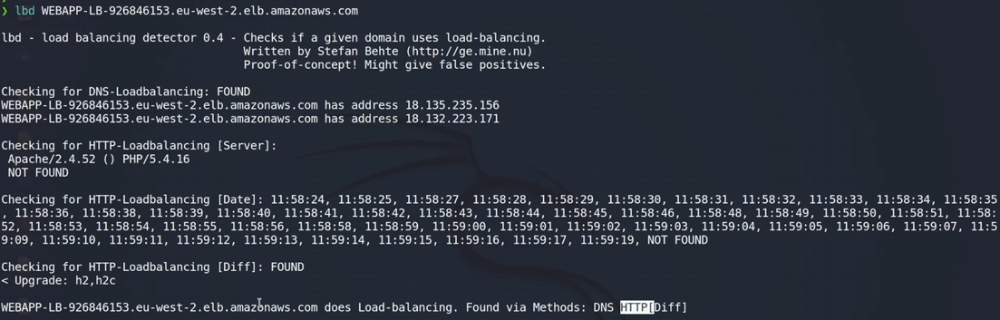
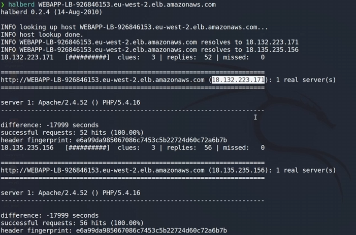

Se trata de una tecnología que se localiza por delante de una aplicación web de forma que cunando se reciba tráfico de los usuarios este se distribuya entre varios servidores web sincronizados.
Es una forma de garantizar nuestro servicio web y distribuir la carga si es muy concurrido.
El problema si nos encontramos un balanceador es que no podremos ver con claridad las tecnologías que usa el servidor en sus serv¡cios porque tenemos la máquina del balanceador que nos apantalla.
Para poder identificar primeramente si hay o no un balanceador:
lbd dominioObetivo

Indica que ha encontrado un balanceador de carga en DNS y ha encontrado otro a nivel http.
Para hacer hacer bypass al balanceador podríamos hacer el escaneo a esas dos IP a nivel HTTP que deberían o normalmente lo son, las que apuntan al servidor web.
En este caso podemos obtener las IP de esas máquinas detrás del balanceador con Halberd:
https://github.com/jmbr/halberd
git clone https://github.com/jmbr/halberd
cd halberd
python2 setup.py install
Aquí halberd realiza el mismo análisis que antes pero además indica las IP que hay por detrás de manera más clara.

En este momento podríamos centrarnos en analizar esas máquinas, que no serían el servidor web real, centrarnos en la aplicación web a traves del balanceador o identificar la IP pública que puede tener el servidor web.
Si esas dos IP que vemos ahí son dos máquinas que apantallan el servidor web al igual que el balanceador si está bien configurado no se puede hacer un bypass del mismo.
En otras ocasiones las instancias o servidores web también cuentan con una IP pública que si no se ha configurado esta no se verá afectada por el apantallamiento del balanceador.
Esta sería la única forma más efectiva de hacer un Bypass. A veces puede ser más sencillo porque simplemente es un Balanceador DNS y es tan sencillo como ir a las aplicaciónes Ip a las que apunta pero si está bien configurado no es posible balancear.
Lo más importante es saber cuando tratamos con un balanceador de carga.